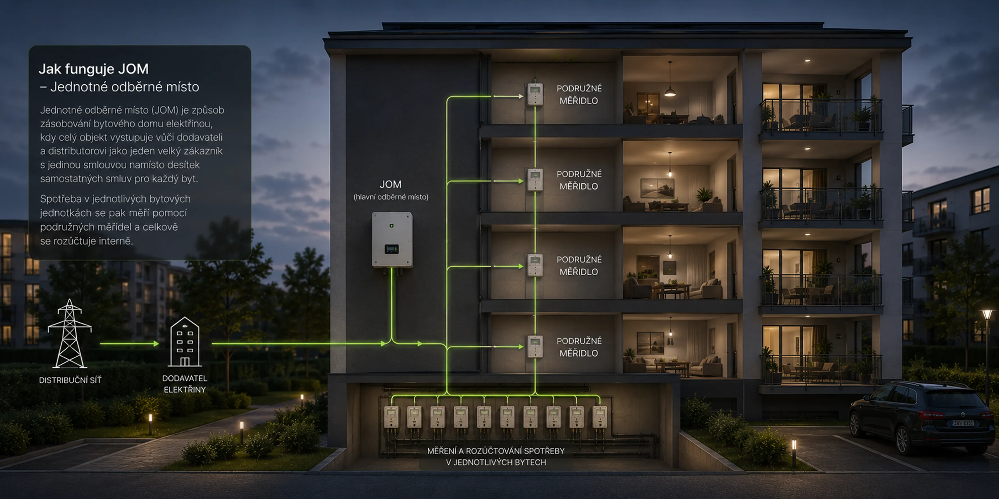

Průvodce vysvětluje, jak sdílení elektřiny napříč byty funguje v praxi – co JOM mění na odběrném místě domu a jak se promítá do záloh na energie.
Co je JOM
Ve standardním modelu má každý byt samostatný elektroměr a vlastní smlouvu s dodavatelem. Elektřina vyrobená fotovoltaikou na střeše tak fakticky nemůže volně putovat do jednotlivých bytů – každý přechod přes hranici odběrného místa naráží na síťové poplatky a regulatorní překážky.
JOM (Jednotné odběrné místo) tento model mění. Na základě novely energetického zákona Lex OZE II, účinné od roku 2024, může celý bytový dům vystupovat vůči distributorovi jako jediný odběratel – s jedním hlavním elektroměrem a jednou smlouvou s dodavatelem. Elektřina z FVE panelů proudí přes střídač do vnitřní sítě domu, kde se rozděluje mezi společné prostory a byty podle nastaveného systému řízení energie. Do distribuční sítě odchází pouze to, co dům skutečně nevyužije. Výsledkem je podstatně vyšší míra vlastní spotřeby (podílu vyrobené elektřiny, který dům spotřebuje sám a neodešle do sítě), nižší zálohy na energie a transparentní rozúčtování mezi bytovými jednotkami.

Rozcestník témat
Ekonomická výhodnost JOM pro bytový dům
Klíčové statistiky, srovnání FVE+JOM vs. FVE bez JOM a kdy je kombinace nejsilnější.
EDC nebo JOM – srovnání variant sdílení elektřiny
Podrobné srovnání obou variant sdílení elektřiny – technické, ekonomické i administrativní rozdíly.
Přechod na JOM – realizace a technické podmínky
Fáze realizace krok za krokem, technické požadavky, dopad na náklady a doporučené pořadí opatření.
Sdílení elektřiny a úspory v bytovém domě na JOM
Kolik dům ušetří podle typu elektroměru, jak funguje sdílení přebytků a srovnání s prodejem do sítě.
Jaký model zvolit
Zákon LEX OZE II z roku 2024 otevřel dvě legální cesty ke sdílení elektřiny z fotovoltaiky. Která varianta je vhodná, závisí hlavně na počtu budov a způsobu správy.
Jeden dům, jeden elektroměr
Více budov, více odběratelů
Komu JOM sedí
Kalkulačka
Poptávka byla odeslána. K dispozici je celý průvodce JOM a kalkulačka FVE.
Zpět na průvodcePoptávka je nezávazná. Osobní údaje jsou zpracovávány pouze pro účely odpovědi na poptávku.
FAQ
JOM (Jednotné odběrné místo) znamená, že celý bytový dům vystupuje vůči distributorovi elektřiny jako jeden odběratel – existuje jedno hlavní odběrné místo a jedna smlouva s dodavatelem. Elektřina vyrobená fotovoltaikou na střeše se přes střídač distribuuje do vnitřní sítě domu, kde se rozděluje mezi společné prostory a byty podle nastaveného systému řízení energie. Do distribuční sítě odchází jen to, co dům skutečně nevyužije.
JOM je možné realizovat díky novele energetického zákona označované jako Lex OZE II, která vstoupila v účinnost v roce 2024. Tato novela vytvořila legislativní rámec, který SVJ umožňuje vystupovat vůči distributorovi jako jeden odběratel a stanovila pravidla pro rozúčtování energie mezi byty.
Ano, to je jedna ze základních podmínek JOM. Všichni vlastníci bytových jednotek přejdou na jednoho dodavatele elektřiny – SVJ pak uzavře jednu smlouvu za celý dům. Jde o kompromis, který výrazně zjednodušuje administrativu: místo desítek individuálních smluv existuje jediná, s výhodnějším tarifem díky vyššímu odebíranému výkonu. Z hlediska spotřebitelských práv je ale důležité vědět, že sloučením odběrných míst obyvatelé pozbývají postavení přímého zákazníka na trhu s elektřinou – jejich vztah k odběru se stává interním rozúčtováním služby v rámci SVJ.
JOM je ideální pro jeden bytový dům – existuje jedno sloučené odběrné místo, jeden dodavatel a elektřina se sdílí uvnitř domu bez přechodu přes distribuční síť. Komunitní energetika (energetické společenství) je naopak vhodná pro více budov nebo obcí: každý účastník může mít vlastního dodavatele, ale sdílení probíhá přes distribuční síť a správa je administrativně náročnější.
Čím větší dům, tím vyšší bývají absolutní úspory – víc bytů znamená vyšší celkovou spotřebu, lepší využití elektřiny z FVE a silnější vyjednávací pozici při sjednávání smlouvy s dodavatelem. Důležitá je také pravidelná spotřeba ve společných prostorách: výtahy, osvětlení a technologie zvyšují míru vlastní spotřeby vyrobené elektřiny.
SVJ nastaví pravidla rozdělení nákladů mezi bytové jednotky – nejčastěji podle skutečné spotřeby měřené podružnými měřidly instalovanými v každém bytě. Každá domácnost obdrží roční vyúčtování s přehledem spotřeby a podílu na vyrobené elektřině z FVE. Pravidla se zapracují do interní směrnice SVJ a lze je kdykoli změnit rozhodnutím shromáždění.
Samotný přechod na JOM (bez FVE) přináší úsporu z výhodnějšího tarifu a snížené administrativy – u větších domů se investice může vrátit i pod 1 rok, u menších domů obvykle v řádu jednotek let. V kombinaci s fotovoltaikou se celková investice vrátí za 5–7 let, záleží na velikosti domu, výkonu FVE a způsobu financování. Právě proto doporučujeme realizovat JOM jako první krok – jeho úspory pak spolufinancují pořízení fotovoltaiky.
Ano. Přechod na JOM vyžaduje schválení shromážděním SVJ nebo bytového družstva; hlasování o technických úpravách se řídí stanovami. Pro úplný přechod všech bytů na JOM je ale nutný 100% souhlas, protože právo na volbu vlastního dodavatele nelze přehlasovat. Vlastník, který nesouhlasí, musí zůstat připojen samostatně mimo JOM – jde o jeho osobní smlouvu s dodavatelem elektřiny a zápis ze shromáždění ji bez jeho souhlasu nezmění.
Zkuste vyhledat dané téma na webu.